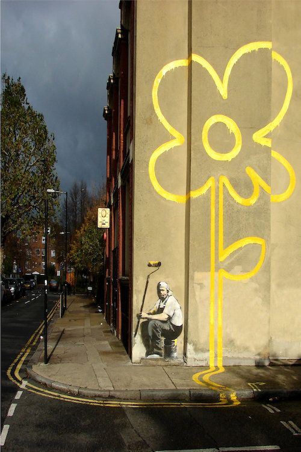

Credit
This piece by Banksy shows the double yellow lines of the road are extended across the pavement and up the wall where they bloom into a flower.
The pavement lines have been removed and the painter’s face is mostly obscured with newer graffiti, but the flower is still clear.
2007-05
Spray Paint
London, UK